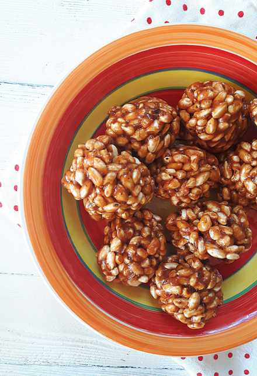

Szyszki

Czas przygotowania: 40 min
Typ diety: dowolna
Typ posiłku: deser
Szyszki
Czas przygotowania: 40 min
Typ diety: dowolna
Typ posiłku: deser
W garnku rozpuszczamy masło, a następnie dodajemy krówki. Wszystko energicznie mieszamy, aż do rozpuszczenia się cukierków.Do garnka wsypujemy preparowany ryż i mieszamy. Lekko studzimy.Z masy formujemy w dłoniach szyszki. Co jakiś czas zwilżamy dłonie wodą, by masa nie kleiła się nadmiernie do rąk. Powinno wyjść ok. 16 sporych szyszek.
Gotowe szyszki przekładamy na talerz i wkładamy do lodówki na 20 minut, aby stwardniały.